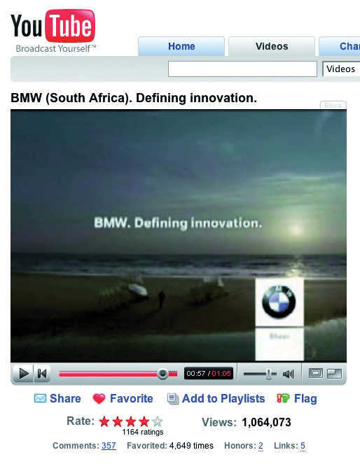
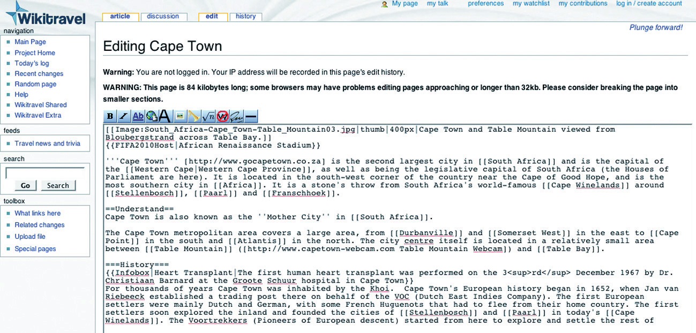

YouTube (http://www.youtube.com) may be the first content-sharing site that comes to mind, but users share images, audio, and information as well as video. If it can be created, then it can be shared. There are many sites that facilitate free sharing of videos, images, and audio, and they are exceptionally popular. From Flickr to YouTube, they have all tapped into the fact that we love to create content for others to view.
The key word here is “free”: there are no fees for joining, whether you are uploading content or viewing content (although premium paid-for memberships can allow access to further features). This means that these sites attract an enormous audience. In fact, according to Alexa rankings, YouTube is the fourth most visited site in the world!
Many of these services also encourage distribution of their content. YouTube allows videos to be embedded easily into other Web sites, and Flickr has generated a number of applications and widgets that allows the images to be shown all over the Web (and even printed onto cards and stickers via http://www.moo.com).
Most of these Web sites rely on advertising to support the free services they offer, and some have a premium paid-for membership version, which is without advertisements.
YouTube (http://www.youtube.com) is essentially a Web site that, by using Flash technology, allows users to upload, view, and share videos with the rest of the connected world. These videos can range from music, movie, and television clips to homemade amateur videos and vlogsA video-based blog, also called a video blog., or video blogs.
YouTube has 60 percent of all online video viewers with over one hundred million viewers in an evening and over twenty hours of video uploaded every minute.“YouTube Traffic Exceeds 100 Million Unique Visitors for First Time in January 2009,” LawyerCasting, March 20, 2009, http://www.lawyercasting.com/2009/03/youtube-gets-100-million-unique-visitors-in-january.html (accessed May 10, 2010). This makes it both the premier online video site and social video-sharing site. This implies that most video consumption on the Web is already based on social media and that there are over 130 million online viewers of videos overall.“March Video Streaming Soars Nearly 40% Compared to Last Year,” NielsenWire, April 13, 2009, http://blog.nielsen.com/nielsenwire/online_mobile/march-video -streaming-soars-nearly-40-compared-to-last-year (accessed June 22, 2010). YouTube was acquired by Google in 2006 for $1.65 billion. In fact, according to comScore data, the number of searches on YouTube makes it the second largest search engine.“YouTube.com Accounted for 1 Out of Every 3 U.S. Online Videos Viewed in January,” press release, comScore, March 14, 2008, http://www.comscore.com/press/release.asp?press=2111 (accessed May 27, 2008).
YouTube is a complex site offering numerous features, yet it is simple to use. While it is possible for unregistered users to watch most of the publicly available videos, a quick, straightforward registration process allows members to upload an unlimited number of clips, comment on and add video responses to them, and subscribe to content feeds that catch their attention and interest. Frequently enhanced functionality and clever features on YouTube continually push this site to deliver bigger and better services to its ever-increasing user base.
Many marketers have adopted the opportunities afforded by YouTube. There are two aspects of marketing through YouTube: self-promotion of people and products, such as music videos, movie previews, interviews, video advertisements, and sponsored advertisements, supplied by Google AdWords.
YouTube has changed the way we view video advertisements. Marketers such as BMW have shown that if an advertisement is good enough, then many people will choose to watch it. BMW has created a BMW South Africa channel on YouTube and has uploaded many of their advertisements. One of them (http://www.youtube.com/user/BMWSouthAfrica#p/a/u/6/a7Ny5BYc-Fs) has been viewed over 1.6 million times since August 2006.
These people have chosen to watch this advertisement at a media cost of zero. Other advertisers have realized that longer advertisements can be created and uploaded. As long as the content is good, there will be viewers. Time constraints are not the same as they are for television networks.
Figure 8.3 BMW South Africa’s YouTube Success
Source: Used by permission from BMW South Africa.
Savvy marketers also realize the potential of watching for organic mentions of their brand and then capitalizing on this. An unknown teenage girl, with the YouTube account name Bowiechick, made a seventy-five-second video clip about her breakup with a boyfriend. While making the clip, she played with some of the effects on her new Webcam, like putting ears on her head and a moustache on her face with its facial tracking software. Three days after uploading the video, 178,000 people had seen this video and 900 had commented on it. The comments had nothing to do with the breakup but with the Logitech Webcam she had used in the video. Following this, the camera broke into Amazon’s Top 100 best-selling-products list. Logitech were obviously listening and made the most of the opportunity by becoming YouTube’s official partner.Greg Sandoval, “YouTube’s ‘Bowiechick’ and the Spiders from Marketing,” ZDNet, April 4, 2006, http://www.zdnet.com/news/youtubes-bowiechick-and-the -spiders-from-marketing/147526 (accessed May 27, 2008).
The medium of online video sharing also means that conferences are able to generate a far larger audience than ever before. The companies that sponsor or run these conferences are able to engage with a larger audience by making freely available videos of the various sessions held. TED (Technology, Entertainment, Design; http://www.ted.com) and Nokia’s Nokia World are excellent examples of organizations that increase interest by making their remarkable presentations available for free.
Howard G. “Ward” Cunningham, pioneer of the wikiA simple Web site that can be edited in real time by a number of users., began programming the WikiWikiWeb software in 1994 and installed it on the Web site of his software consultancy in 1995. Back then he described a wiki as “the simplest online database that could possibly work.”“What Is Wiki,” Wiki, June 27, 2002, http://wiki.org/wiki.cgi?WhatIsWiki (accessed June 23, 2010). Thirteen years later, this is probably still the most accurate description.
“Wiki wiki” means “rapidly” in the Hawaiian language.
Essentially, a wiki is a piece of software that users can create and edit online, using simple markup language via a Web browser. They support hyperlinks and have a simple text syntax for creating new pages and links between internal pages. In its most basic form, a wiki is a Web site that supports user collaboration through a variety of functions.
There are numerous types of wiki software available that share the following characteristics:
Wikis can be open to all, such as Wikipedia (http://www.wikipedia.org) and Wikitravel (http://www.wikitravel.org); they can be open to or aimed at certain communities only, such as Geek Dinner attendees (http://geekdinner.pbwiki.com); or they can be private and open only to individuals within an organization. Internal wikis are exceptionally useful for creating knowledge bases within organizations and companies.
If you’d like to try out setting up your own wiki, http://www.pbwiki.com provides free wikis and has a host of features.
Figure 8.4
A wiki can be edited by anyone who can access it.
Wikipedia (http://www.wikipedia.org) is a free, Web-based encyclopedia that is rated one of the top-ten most visited sites in the world. Originally created in 2001 by James Wales and Larry Sanger, this online encyclopedia has received both praise and criticism. Roughly fifteen times the size of Encyclopaedia Britannica, with more than 14 million articles in over 262 languages, this encyclopedia is increasing in size at an exponential level.Wikipedia, s.v. “Wikipedia: About,” http://en.wikipedia.org/wiki/Wikipedia:About (accessed June 20, 2010). However, with the increased adoption of this tool, criticism has also increased as to the validity of the definitions.
All definitions seen on Wikipedia are written by a collaborative team of volunteers from around the world. Anyone can submit a definition, and these can then be edited by anyone who has access to the Internet. This combination of contributors leads to a democratic way of including the most up-to-date information. Since definitions are reviewed frequently, it should decrease the amount of bias and inaccuracy while building a unique social networkIn the online sense, this refers to a type of Web-site model where individual members become part of a broader virtual community., with people of similar interests contributing.
All Wikipedia definitions should also be referenced externally. Although anyone can contribute to Wikipedia, there is a permission ranking system that has been instituted to maintain the level of credibility that is associated with Wikipedia. Further measures include a discussion tab on most articles where academics can question the validity of the sources and its content.
Wikipedia articles tend to rank highly in the search engine results pages (SERPs), so the allure of a link to your Web site from a relevant article is tempting indeed. Wikipedia has instituted a policy that all external links are “nofollow” links so as to combat spam.
“Nofollow” means that Wikipedia is indicating to the search engines that these links do not necessarily endorse the Web sites being linked to.
Wikipedia is a useful research tool. With so much information on the Internet, many users are starting to look at a human-edited (as opposed to search-engine-algorithm-distilled) way to embark on research. For a company to be reachable via a link from this research base can be very traffic and reputation worthy.
Companies should also take note of what is being written about them on Wikipedia and make transparent efforts to correct information.
Content-sharing sites, from video to photos to music to knowledge, provide marketers with a snapshot of how users interact with and perceive their brand. Most of the sites have really simple syndication (RSS) feeds available, where marketers can keep a tab on mentions of their brand.
These sites and services allow marketers the opportunity to capitalize on the creativity of their consumers to further amplify their brand. By making content easily available and removing restrictions on use of that content, companies can nurture creative interactions that are likely to spread.
Wikis can be used when creating an event with a network. Encouraging users to interact allows them greater connection and ownership of the outcome and provides a means for ongoing communication.